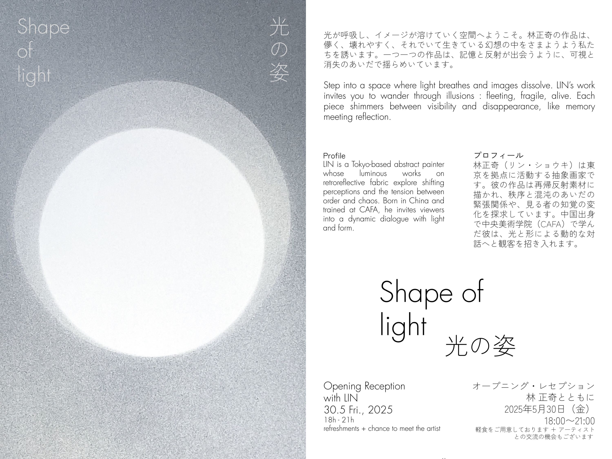

Photographer, filmmaker & curator.
Paris ・ Tokyo.
Paris ・ Tokyo.

Curation ・ Lin Syouki ・ KURA Gallery, Tokyo

Short Film ・ Centre Pompidou, 8 international festivals

Analogue photography ・ Sankai Juku, Butoh, Tokyo

Analogue photography ・ interstices, floating spaces
Editorial · Commercial


Selection 2018–2025
Reportage · Backstage · Architecture


2018–2025
Fashion · Commercial

Kissui Campaign
Commercial

Scala Regia × Chanel
Fashion Film

Boycott × Saint Laurent
Fashion Film
Music Videos

Ashitaka & San
Joe Hisaishi (Princess Mononoke) ・ Universal Music

Bleu
Blondino ・ independent artist

OK ou KO
Emmy Liyana ・ Warner Music Group

Dorothée Murail is a French photographer, filmmaker and curator. After six years living and working in Japan, she is now based in Paris.
Her projects often begin with an image, before words. They then develop through visual associations, research and collaborations, until they find the form (photograph, film or exhibition) that is their own.
A graduate of La Cambre and Les Gobelins, she has spent more than ten years developing a practice at the crossroads of the still and moving image. Her personal work has been shown at the Centre Pompidou and Nuit Blanche Kyoto, among others. In 2025 she curated Shape of Light, the first solo exhibition of the painter Lin Syouki, in Tokyo.
Alongside her personal practice, she collaborates with houses and institutions such as Cartier and Dior.
Based in Paris ・ six years in Tokyo.
Commissions, collaborations, and curatorial projects.